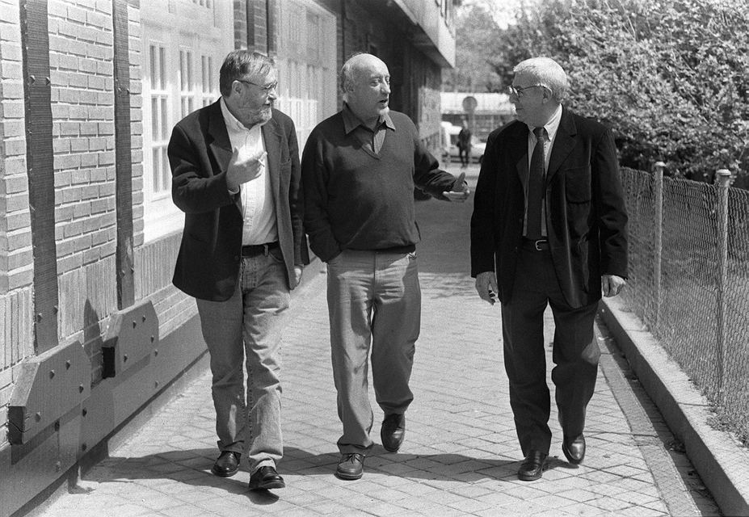

Cruzando con Azcona un paso de cebra

Fue uno de los héroes de mi juventud. Hoy sus amigos formamos una fratría o hermandad
Los amigos de Rafael Azcona formamos un fratría o hermandad que en estos días celebramos el centenario de su nacimiento en 1926, en Logroño. Si viviera nos diría que estamos dando demasiado la lata. Que le dejemos de una vez en paz. Si en vida no se molestaba en recoger ningún premio , imagínense ahora llegar desde el más allá y tener que saludar a uno a uno a sus admiradores y preguntarles qué tal va la cosa por aquí abajo con tanto zoquete y cantamañanas. Buñuel dijo que le gustaría levantarse de la tumba cada 10 años, acercarse a un quiosco, comprar el periódico, sentarse en un bar, enterarse de lo que pasa mientras se tomaba un Martini y volver a la tumba. Rafael Azcona, ni eso. Imagino…